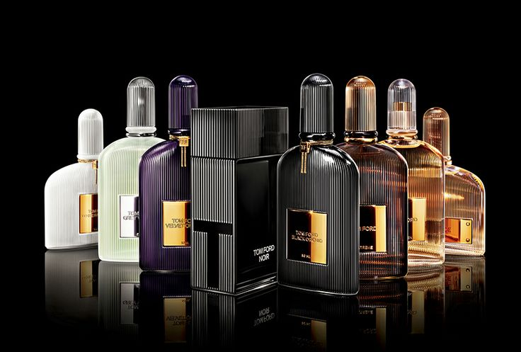

Our perfumes more wanted

You can be everything.. fresh, misterious, like flower, classy

Black Orchid
opens with aphrodisiac black truffle and sparkling ylang ylang—touched with effervescent bergamot and bitter orange. Rum-soaked black plum surrounds the black orchid accord in golden sensuality, while woody patchouli and creamy vanilla wrap the orchid in rich warmth.

Lost Cherry
mingles black cherry with cherry liqueur accords and a touch of bitter almond, bursting forth in waves of sweet and tart.

Oud Wood
uses rare oud notes to overwhelm the senses with dark, earthy sensuality. Exotic rosewood and cardamom give way to a smoky blend of precious oud notes, sandalwood and vetiver.